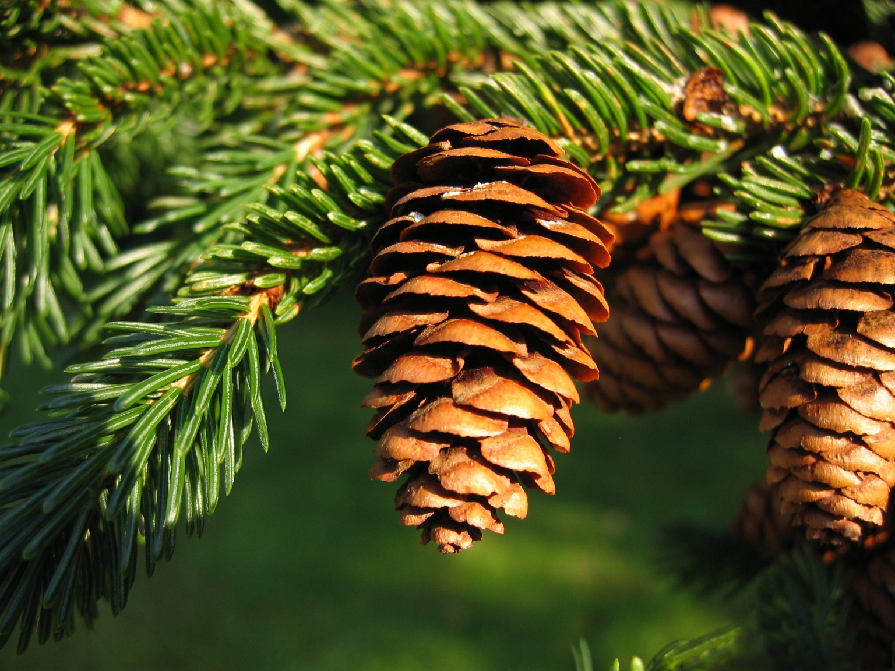
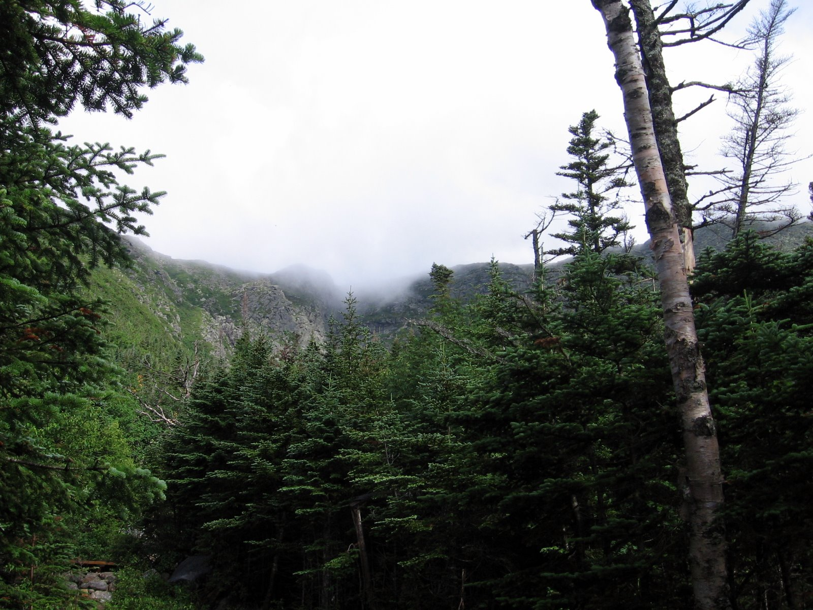
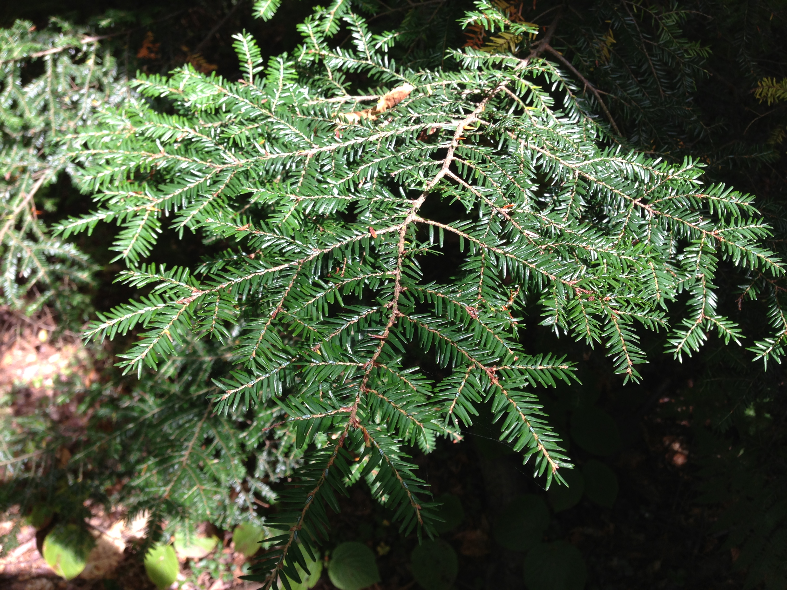

The Conifers of Maine
Introduction
"Resolved, That the Pine Cone and Tassel is hereby declared to be the floral emblem for Maine, in the National Garland of Flowers..." -State Resolution, 1895
Conifers are trees that bear pinecones and have needle-like leaves. There are several main classes of conifers, including pines, spruces, and hemlocks. All of them occur throughout the forests of Maine, in the Northeastern part of the United States.
What are the most common conifer varieties?
Eastern White Pine (Pinus strobus)
The Eastern white pine is the most common pine species in Maine. In fact, its abundance has given the state its nickname, "The Pine Tree State." It has been historically and important part of the Maine economy.

Red Spruce (Picea rubens)
The Red spruce is found throughout the state, often on the north sides of slopes and in rocky soils. It's bark is scaly and reddish and it drops its cones seasonally every year.

Balsam Fir (Abies balsamea)
This is the most common conifer in the state. Its scales are grayish and it can grow to 70 feet. The Balsam fir can be used, among other things, for Christmas trees.

Eastern Hemlock (Tsuga canadensis)
The Eastern hemlock likes cool areas and shade. It can be identified by its flat leaves, scaly bark, and small cones.

What are some current issues?
In recent years, ecological threats to Maine's forests have been on the rise. This has partly been due to the influx of invasive insects, including wood-borers and the Hemlock wooly adelgid. The Maine Department of Agriculture, Conservation and Forestry is doing its part to help prevent the spread of invasive species.
How can I get in touch?
Please let us know if you see one of these species by submitting a tree sighting!
For further reading:
- Trees for ME Here's a website similar in subject to mine. I don't like its presentation because it's not easy to read: the paragraphs are dense and the sections are not similarly formatted. I suppose overall it just feels unfinished. I do see some HTML I could learn from when looking at the source code, however, including `style` tag, "Back to Top" linking, and the `face` attribute to change the font style.
- Forest Trees of Maine, Maine Forest Service, Dept. of Conservation. 2008.